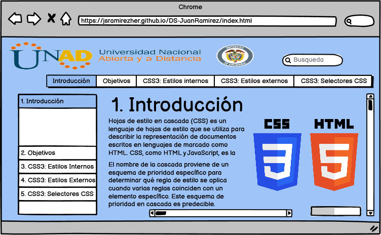

CSS3: ESTILOS INTERNOS, EXTERNOS Y SELECTORES CSS
1. OBJETIVOS DEL SITIO
1.1. Objetivo General
Desarrollar el sitio web con formato HTML5, CSS3 entre otros sistemas, para involucrar tematicas de aprendizaje sobre: CSS3 - Estilos Internos y Externos y Selectores (Basicos y Avanzados) para la creación de un OVI solicitado por UNAD a la empresa htmldesign bajo el cargo del desarrollador web de la empresa.
1.2. Objectivos Especificos
- Dinamizar el aprendizaje virtual de la tematica Diseños de Sitios Web mediante la estrategia de Objetos Virtuales; Como: Objetos Virtuales de Aprendizaje (OVA) o Objetos Virtuales de Información (OVI).
- Planificar el proyecto OVI para ser presentando al cliente (UNAD) y la esquematización que se tendrá lugar en un sitio web creado a partir de HTML5, CSS3 y otras herramientas necesarias.
- Presentar mediante un borrador el contenido a ser visualizado en la pagina y en esta misma incluirse la maquetación del sitio (Mock-up) De igual manera, ser sincronizado en el repostorio creado y subir la pagina web para ser evaluada.
2. MATERIALES
2.1. Textos
2.2. Imagenes
2.3. Vídeos
3. CONTENIDO
3.1. Contenido del OVI
En el OVI, se subdividirá en varias secciones para explicar la tematica relacionada con: CSS3: Estilos internos, externos y selectores CSS
Las cuales se destacará las siguientes para brindar una excelente experiencia al usuario final:
- Introducción de la Tematica
- Objetivos del sitio
- CSS3: Estilos Internos (Incluyendo medio audiovisual como: Imagenes, Vectores y Vídeos Instructivos)
- CSS3: Estilos Externos (Incluyendo medio audiovisual como: Imagenes, Vectores y Vídeos Instructivos)
- CSS3: Selectores de Estilo (Esta presenta dos sub-temas relacionados con: Selectores Básicos y Avanzados).
Con estas secciones se garantizará una buena explicación e interacción con los usuarios finales satisfaciendo las necesidades del cliente.
3.2. Maquetación del OVI
